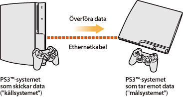
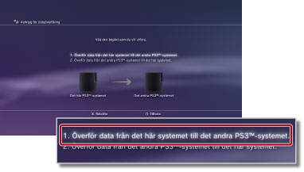
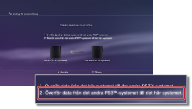

Inställningar > Systeminställningar > Verktyg för dataöverföring
Verktyg för dataöverföring
Det går nu att föra över (kopiera eller flytta) data som sparats på ett PS3™-systems hårddisk till ett annat PS3™-systems hårddisk via en Ethernetkabel.

Viktig information
- När du utför denna funktion raderas alla data som finns lagrade på det PS3™-system som tar emot datan ("målsystemet").
- De data som raderats kan inte återställas, var därför försiktig så att du inte raderar viktiga data. Det är användarens ansvar om data förstörs eller försvinner.
- Vissa typer av data går inte att överföra. Välj här för mer information.
Förbereda systemet för dataöverföring
Följande steg måste utföras innan du startar dataöverföringen.
1. |
Uppdatera programvaran för båda PS3™-systemen till den senaste versionen. |
|---|---|
2. |
Förbered PS3™-systemet som skickar datan ("källsystemet"). |
- Skapa ett PlayStation®Network-konto om inte användaren redan har det.
- - Välj
 (PlayStation®Network) >
(PlayStation®Network) >  (Registrera dig för PlayStation®Network) och följ sedan instruktionerna på skärmen för att skapa ett konto.
(Registrera dig för PlayStation®Network) och följ sedan instruktionerna på skärmen för att skapa ett konto. - Avaktivera PS3™-systemet om innehållet i de data som ska överföras köptes från PlayStation®Store.
- - Välj (PlayStation®Network) >
 (Kontohantering) >
(Kontohantering) >  (System Activation).
(System Activation). - Säkerhetskopiera eller "synka" trophyinformation på PS3™-systemet med PlayStation®Network-servern om du vill överföra trophy-information.
- - Anmäl dig på PlayStation®Network och välj sedan
 (Spel) >
(Spel) >  (Trophysamling).
(Trophysamling). - Anmäl dig på
 (PlayStation®Home) innan du överför data om du erhållit belöningar för användning i (PlayStation®Home) på källsystemet.
(PlayStation®Home) innan du överför data om du erhållit belöningar för användning i (PlayStation®Home) på källsystemet. - Säkerhetskopiera din profil och de steg du skapade i LittleBigPlanet™ till ditt sparade spel. Du kan sedan använda den data du säkerhetskopierade när du spelar LittleBigPlanet™ på PS3™-målsystemet.
Obs!
Följande restriktioner gäller om du utför dataöverföring utan att skapa ett PlayStation®Network-konto:
- Det kan hända att de data du sparat på PS3™-målsystemet inte går att använda.
- Det kan hända att du inte längre kan vinna några trophies med de data du överfört.
- Trophy-information överförs inte.
Överföring av data
Stäng av båda PS3™-systemen och utför därefter följande steg. Om de data som överförs är speldata som är förbjudna att kopiera eller data som är kopieringsskyddade, flyttas de till PS3™-målsystemet och raderas från PS3™-källsystemet.
1. |
Upprätta en direktanslutning med en Ethernetkabel mellan de två PS3™-systemen. |
|---|---|
2. |
Anslut PS3™-systemen till olika videoingångar på TV:n. |
3. |
Starta TV:n och starta därefter PS3™-systemen. |
4. |
På PS3™-källsystemet väljer du |
5. |
Välj [1. Överför data från det här systemet till det andra PS3™-systemet.].  Om du inte slutförde de förberedande stegen som beskrevs tidigare följer du instruktionerna på skärmen för att slutföra dessa steg. |
6. |
När PS3™-systemet befinner sig i standbyläge för att påbörja dataöverföringen använder du TV:ns fjärrkontroll för att växla videoingång för visning av skärmbilden från PS3™-målsystemet. |
7. |
På PS3™-målsystemet väljer du |
8. |
Välj [2. Överför data från det andra PS3™-systemet till det här systemet.].  Följ instruktionerna på skärmen för att slutföra funktionen. |
 (Inställningar) >
(Inställningar) >  (Systeminställningar) > [Verktyg för dataöverföring].
(Systeminställningar) > [Verktyg för dataöverföring].Tips!
- När dataöverföringen slutförts kan du stänga av PS3™-källsystemet. Ställ in TV:n för visning av skärmbilden från PS3™-källsystemet och välj sedan
 (Användare) >
(Användare) >  (Stäng av systemet).
(Stäng av systemet). - Om innehåll som laddats ner från PlayStation®Store överfördes i detta förfarande måste du aktivera PS3™-målsystemet innan det går att använda datan. Logga in på PS3™-systemet som ägaren av innehållet och välj sedan (PlayStation®Network) > (Kontohantering) > (System Activation) för att aktivera systemet.
Begränsningar gällande verktyg för dataöverföring
Vissa typer av data kan inte föras över med verktyget för dataöverföring och vissa typer av data kan föras över men inte spelas upp på PS3™-målsystemet.
För uppdaterad information, se SCE-webbsidan för din region. Följande typer av data går inte att föra över:
- Videoinnehåll för uthyrning som laddats ner från PlayStation®Store (filtyp: MNV)
- Spår (inklusive "låtsamlingar") för SingStar™-programmet som sparats på PS3™-systemets hårddisk
- Kopieringsskyddade videofiler (filtyper: MGV och ETS)
- Videofiler som är kompatibla med tjänsten DivX® VOD (Video On Demand)
För följande typer av data måste ytterligare steg utföras efter att dataöverföringen slutförts för att du ska kunna använda datan:
- Programdata för Life with PlayStation®
- - Ladda ner och installera programmet Life with PlayStation® på PS3™-målsystemet. Du kan fortsätta samla poäng för rankingssystemet på PlayStation®Network för kanalen Folding@home™.
- GripShift™
- - När du startar spelet för första gången efter dataöverföringen visas ett felmeddelande och du kan inte spela spelet. Ladda ner och installera spelet igen för att kunna spela det.
- Sparad data för Ghostbusters™ och Ghostbusters™: Videospelet
- - Det sparade spelet kan inte identifieras när du startar spelet för första gången efter dataöverföringen. För att använda den data du sparat avslutar du spelet och startar det sedan igen.
Tips!
Det kan hända att vissa programtitlar inte finns i vissa regioner.